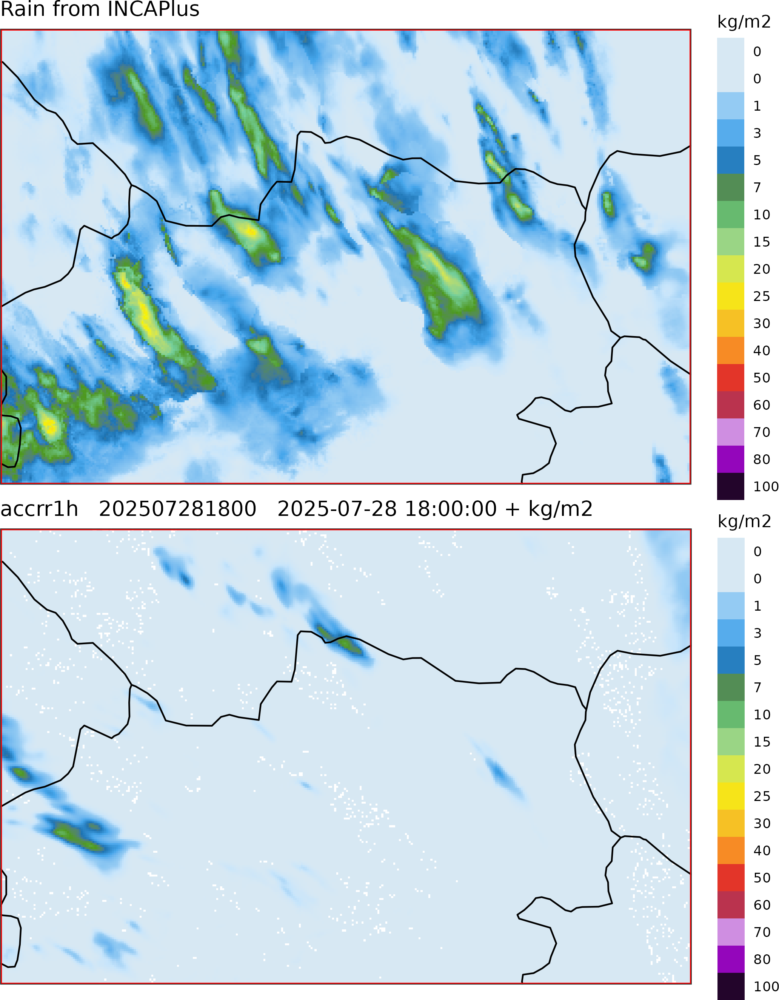
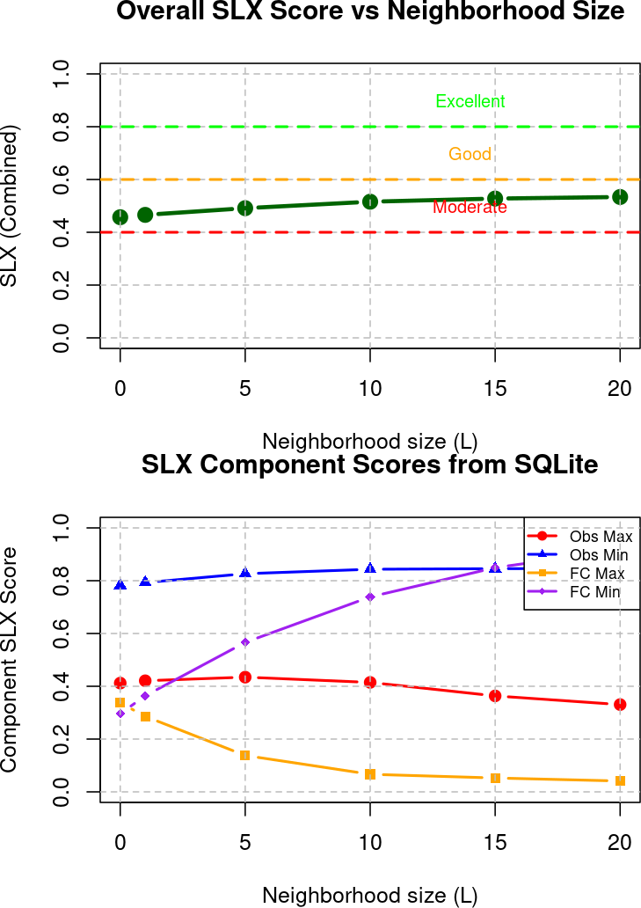
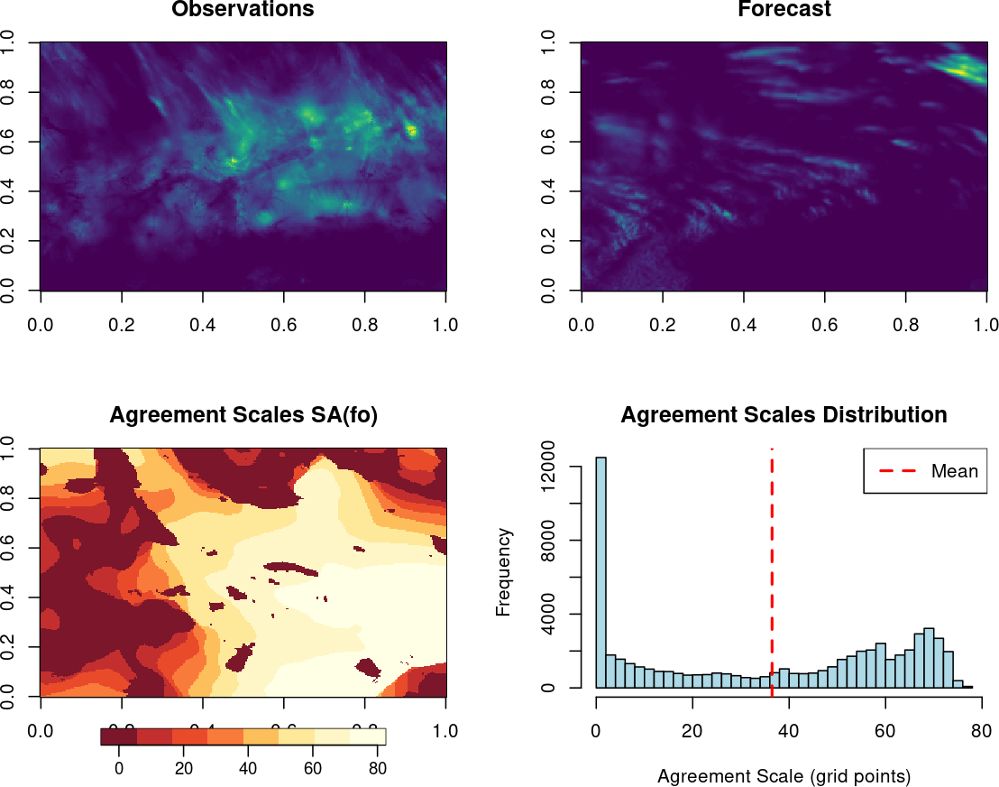
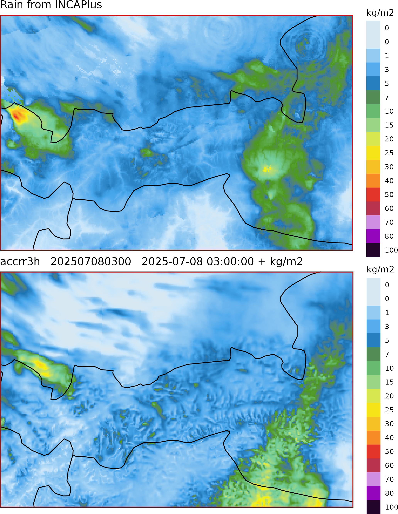
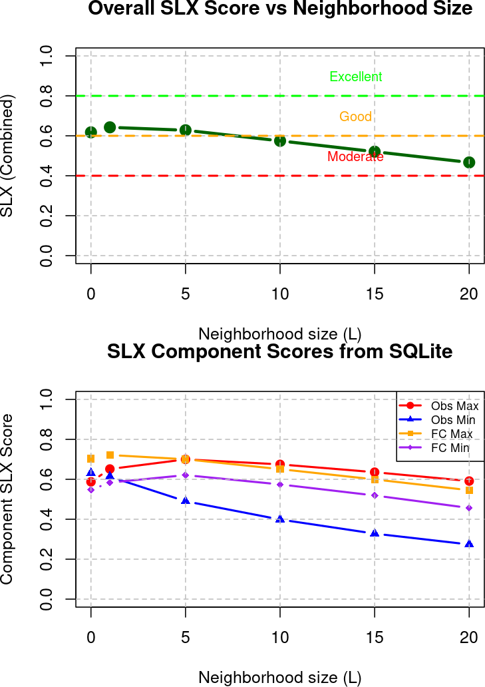
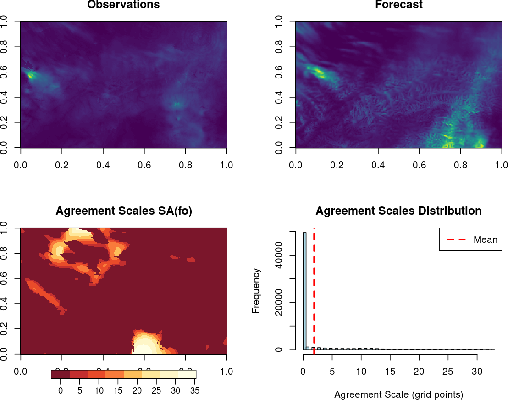

Implementation and Validation Results from GeoSphere Stay
2025-09-01
Three-week scientific visit at GeoSphere (July 13 - August 1, 2025)
Main Objectives:
Implementation of spatial verification methods
Focus on extreme weather events
Integration with ACCORD MQA initiative
Development using harp package
Methods Implemented:
SLX Score (Structure of Local eXtremes)
Agreement Scales Score (Dey Method)
Implemented both methods in harpSpatial (develop)
Validated using Austrian CLAEF 1km ensemble
Tested on DINI and DMI radar data
Analyzed convective vs orographic cases
Purpose: Evaluate model capability to predict spatial structure of precipitation extremes
Four Components:
SLX_ob_max: How well forecast captures observed maxima
SLX_fc_max: How well observations capture forecast maxima
SLX_ob_min: How well forecast captures observed minima
SLX_fc_min: How well observations capture forecast minima
\[\text{SLX} = \frac{1}{4}(\text{SLX}_{ob\_max} + \text{SLX}_{fc\_max} + \text{SLX}_{ob\_min} + \text{SLX}_{fc\_min})\]
Key Properties:
Neighborhood-based (L parameter)
Asymmetric penalty function
Tolerance for small displacement errors
Scale-dependent evaluation
Piecewise linear function balancing over/under-forecasting:
\[S(ob, \phi) = \begin{cases} \phi/(ob-k) & \text{if } ob > k \text{ and } \phi < ob-k \\ 1 & \text{if } ob > k \text{ and } ob-k \leq \phi \leq ob \\ \max(1 - (\phi-ob)/(A \times ob), 0) & \text{if } ob > k \text{ and } \phi > ob \\ 1 & \text{if } ob \leq k \text{ and } \phi \leq k \\ \max(1 - (\phi-k)/(A \times k), 0) & \text{if } ob \leq k \text{ and } \phi > k \end{cases}\]
Parameters: k = 0.1 kg/m² (dry threshold), A = 4 (asymmetry factor)
Purpose: Quantify spatial predictability and scale-dependent skill for ensemble verification
Similarity Criterion: \[D^S_{ij} = \begin{cases} \frac{(f^S_{1ij} - f^S_{2ij})^2}{(f^S_{1ij})^2 + (f^S_{2ij})^2} & \text{if } f^S_{1ij} > 0 \text{ or } f^S_{2ij} > 0 \\ 1 & \text{if both fields = 0} \end{cases}\]
Agreement Criterion: \[D^S_{ij} \leq D^S_{crit,ij} = \alpha + (1-\alpha)\frac{S}{S_{lim}}\]
Applications:
SA(mm): Agreement between ensemble members
SA(mo): Agreement between members and observations
Interpretation:
Small scales → high spatial predictability
Large scales → low spatial predictability
SA(mo) > SA(mm) → under-spread ensemble

Event Characteristics:
Convection-driven precipitation
Multiple cells across Austria
Displacement errors evident
Complex spatial patterns

SLX Analysis:
Obs minima (0.8-0.85): Dry areas well represented
Obs maxima (0.38-0.42): Partly captured, location mismatches
Forecast minima: Improves with scale (0.3→0.8)
Forecast maxima: Poor agreement (<0.35), drops to ~0

Agreement scales Analysis:
Fields: The forecast shows that rain with similar pattern, fine details misaligned.
Scales: Most areas only show agreement when viewed on broad scales (40–60+ grid points), fine‑scale matches rare.
Histogram: Shows some points align perfectly in no‑rain areas, but overall the forecast skill only emerges at large (~38 grid point) mesoscale smoothing.
Combined SLX: ~0.45 at grid scale
Gradual improvement with neighborhood size
Forecast maxima poorly collocated with observations
Interpretation: Model captures mesoscale patterns but struggles with fine-scale localization

Event Characteristics:
Orographically-driven precipitation
Terrain-locked features
Strong NW maximum
Additional spurious maxima in SE

SLX Analysis:
Overall SLX: 0.65 at L=0 (Good), decreases with scale
Maxima components: Strong (0.65-0.70), well collocated
Obs minima: Degrades markedly (0.55→0.25)
Forecast minima: Moderate and stable

Agreement scales Analysis:
Fields: Precipitation is localized. The model produces precipitation in similar regions, introducing additional maxima, especially in the southeast, which were not observed.
Scales: The agreeent scales map shows that agreement is reached at very fine neighborhood sizes across much of the domain. Forecast and observed precipitation structures align closely, and only minimal spatial tolerance is needed.
Histogram - Has an extremely sharp spike at very small scales (0–3 grid points). Long tail toward larger scales is negligible compared to the dominance at fine scales.
SLX skill highest at grid scale (~0.65)
Degrades with increasing neighborhood size
Small agreement scales (~2-3 grid points)
Orographic forcing anchors precipitation well
Interpretation: Excellent fine-scale skill due to terrain anchoring. Wet bias evident in forecast minima component.
| Aspect | Convective Case | Orographic Case |
|---|---|---|
| Peak SLX | 0.52 (L=20, Moderate) | 0.65 (L=0, Good) |
| Behavior with Scale | Increases with L | Decreases with L |
| Mean Agreement Scale | ~38 grid points | ~2-3 grid points |
| Spatial Predictability | Low (mesoscale only) | High (terrain-locked) |
| Main Issue | Displacement errors | Wet bias/false alarms |
| Forecast Quality | Pattern similar, wrong location | Good location, excess precipitation |
Integration with harp ecosystem:
# SLX integration in harpSpatial
verify_spatial(forecast_data,
obs_data,
scores = c("slx", "fss"),
thresholds = c(0.1, 1, 5),
neighbourhood_sizes = seq(0, 20, 5),
by = c("lead_time", "fcst_cycle"))Agreement Scales:
# Ensemble member-member agreement
sa_mm <- calc_agreement_scales_mm(
ensemble_data,
alpha = 0.5,
s_lim = 80)
# Member-observation agreement
sa_mo <- calc_agreement_scales_mo(
ensemble_data,
obs_data,
alpha = 0.5,
s_lim = 80)Current Status: - ✅ SLX implemented in verify_spatial
✅ Agreement scales as separate functions
✅ Validated against literature examples
⚠️ Performance optimization needed for large domains
Method validation using synthetic and literature cases:
SLX Validation:
✅ Reproduced Sass (2021) synthetic test cases
✅ Score increases with neighborhood size for displaced features
Agreement Scales Validation:
✅ Reproduced Dey et al. (2016) idealized ensemble
✅ Scale-dependent agreement maps match expectations
Case studies:
Both methods show expected behavior
Results consistent with meteorological understanding
Clear discrimination between event types
Complementary information to traditional scores
SLX Score Benefits:
✅ Addresses double penalty problem
✅ Scale-dependent evaluation
✅ Comprehensive (maxima + minima)
Agreement Scales Benefits:
✅ Location-dependent skill assessment
✅ Ensemble spread-skill relationships
✅ Scale-aware uncertainty quantification
Implementation of SLX and Agreement Scales methods in harp
Validation using both synthetic and real-world cases
Analysis of two contrasting meteorological scenarios
Integration within harpSpatial library
Short-term Priorities:
Merge branches
Performance optimization for large domains (i.e., DINI)
Include member-to-member option in verify_spatial (currently only S(mo) comparison)
Integration of agreement scales in main oper-harp-verif workflow
Documentation and user guidance
Additional case study analysis
Medium-term Development:
Extension to other variables (wind, temperature)
Multi-threshold analysis capabilities
ACCORD MQA - GeoSphere Stay 2025